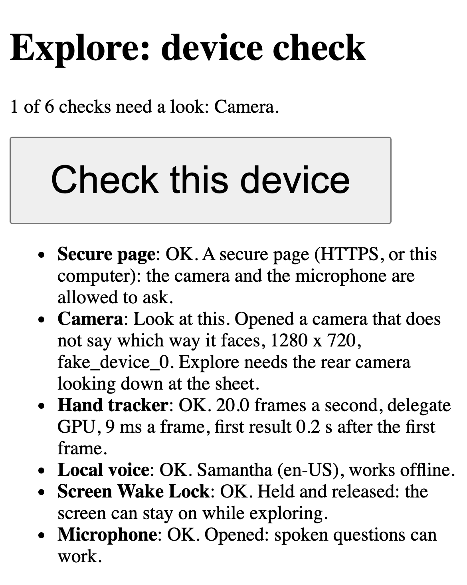
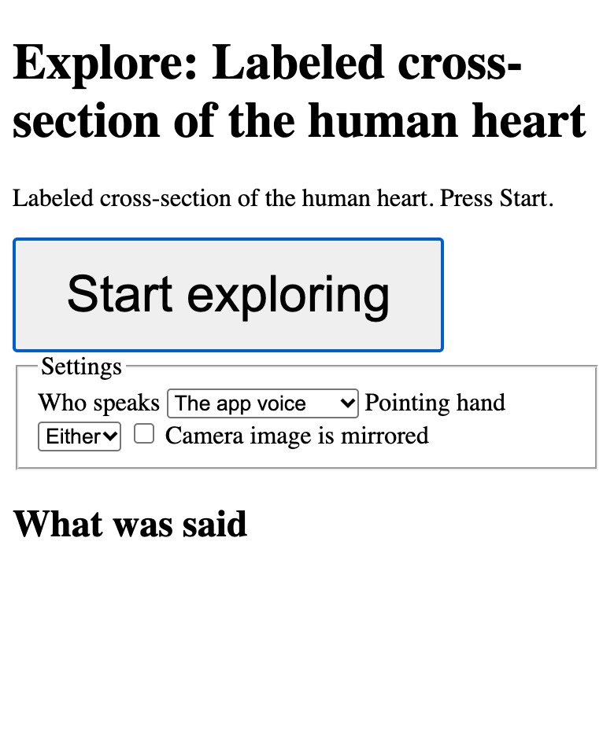
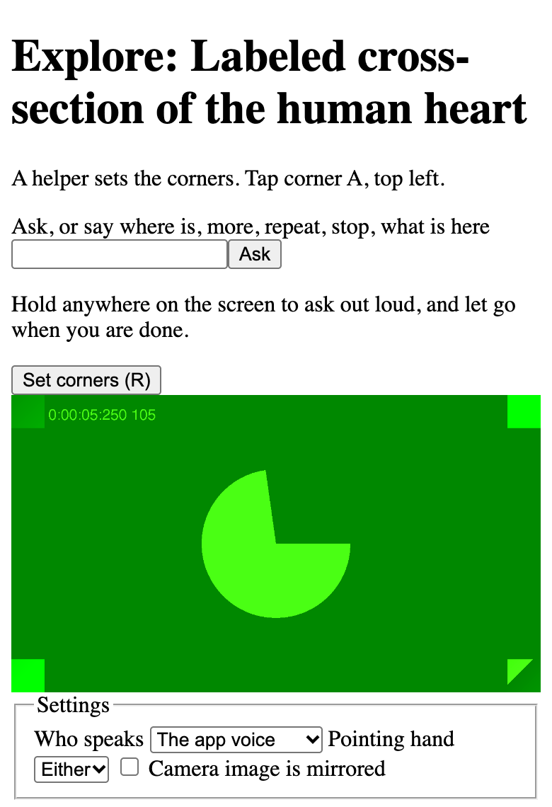

Set up the iPhone over a sheet
The Mac runs the API and serves the app over HTTPS on the local network. The iPhone opens it in Safari, watches the printed sheet from a mount, and follows the fingertip. This guide follows docs/DEMO.md.
What you need
- The Mac running
make demo-live, ormake demo-mockfor no Meta calls (Get started has the setup, the phone certificate and the trusted mkcert root). - The iPhone on the same Wi-Fi as the Mac.
- A published sheet, printed at 100 percent, its lines raised on swell paper or with puffy paint.
- A mount that holds the phone still above the sheet.
The phone loads the app and the hand model from the Mac, so it needs the local network, not the internet. Questions need the internet.
1. The device check
On the iPhone, open the device check. Use the Mac’s .local name first; make demo-live prints the addresses with the real name.
https://<your-mac>.local:5173/explore?check=1Press “Check this device”. Every row should say OK before filming or teaching:
- Secure page: HTTPS, so the camera and the microphone are allowed to ask.
- Camera: the rear camera, looking down at the sheet.
- Hand tracker: 10 frames a second or more.
- Local voice: a voice that works offline.
- Screen Wake Lock: “Held and released”. If it fails, set Auto-Lock to Never in Settings, Display and Brightness.
- Microphone: opened, so spoken questions can work.

2. Print and mount
- Print the sheet’s PDF at 100 percent (“Actual size”, not “Fit”). Measure the bar at the bottom with a ruler: it must be 100 mm.
- Raise the lines, then tape the sheet flat at two corners.
- Fix the phone above the sheet with all four corner marks in view. It must not move once the corners are set.
- Turn the overhead light on and keep window glare off the sheet.
- Turn the silent switch off and the volume up: Safari mutes the tones in silent mode.
3. Set the corners
This is the calibration. It maps the camera picture to millimeters on the page, and a sighted helper does it once.
- Open the sheet in Explore (the addresses
make demo-liveprints, or Author’s “Open version 1 in Explore” link) and press “Start exploring”. - Tap the four printed corner marks on the camera view, in order: A top left, B top right, C bottom right, D bottom left. The app asks for each one: “A helper sets the corners. Tap corner A, top left.”
- Check that the drawn outline sits on the printed marks. If not, tap “Set corners” and tap the four marks again. On a keyboard, R sets them again.


The screenshots show text from the heart sheet: Heart diagram-en.svg by ZooFari, CC BY-SA 3.0, via Wikimedia Commons. Resized and placed on a white background.
The corners are saved for that camera size, so a reload with the same camera and sheet needs no new taps. Nothing detects the phone or the sheet moving afterward: if either moves, set the corners again.
4. Explore
- Touch a part: a texture tone on entering, then its name when the finger rests.
- Hold anywhere on the screen to ask out loud, and let go when you are done. “More”, “repeat” and “where is the aorta” are handled on the phone.
- With a keyboard: H says the help, M more, period repeats, W what is here, Escape stops speech, R sets the corners.
- With the network off, touch still speaks; a question says “Questions need the network. Labels still work.”
If Safari breaks on the security headers
Signs: the device check’s hand tracker row fails or never finishes, Start does nothing, or a page stays blank. Stop the servers with Ctrl-C and start them without the Content-Security-Policy, then reload the page on the phone:
TT_CSP=off make demo-live